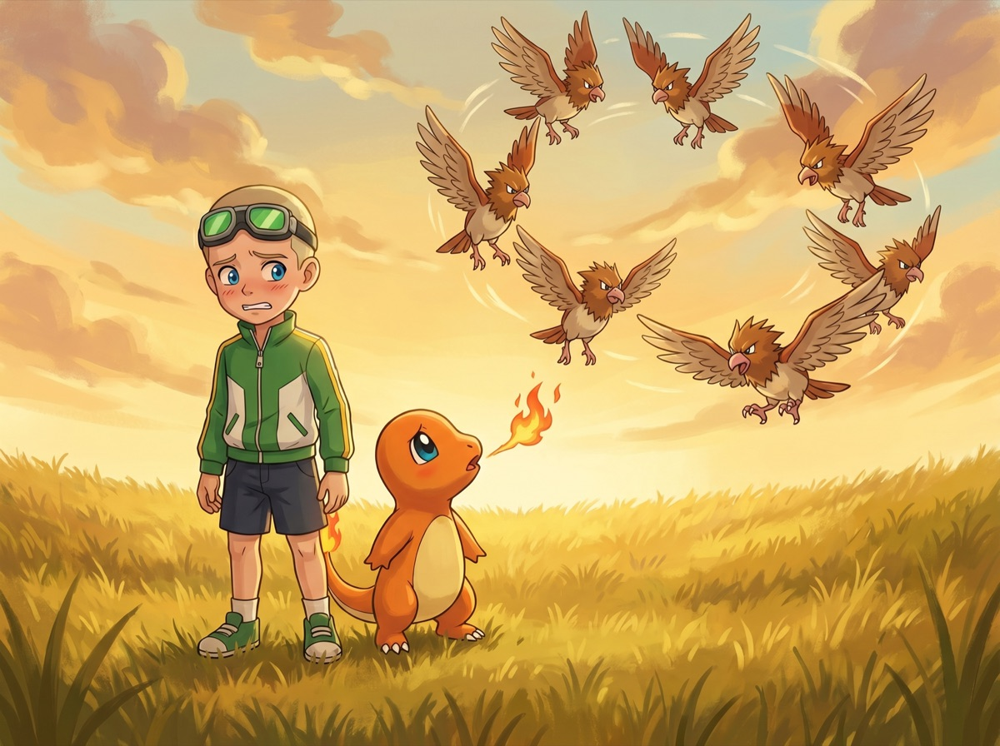
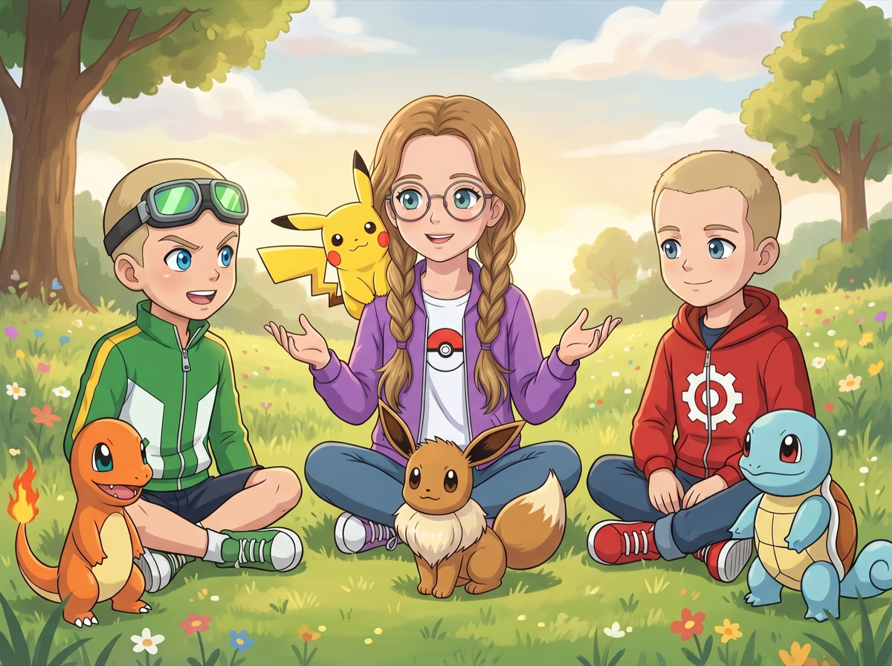
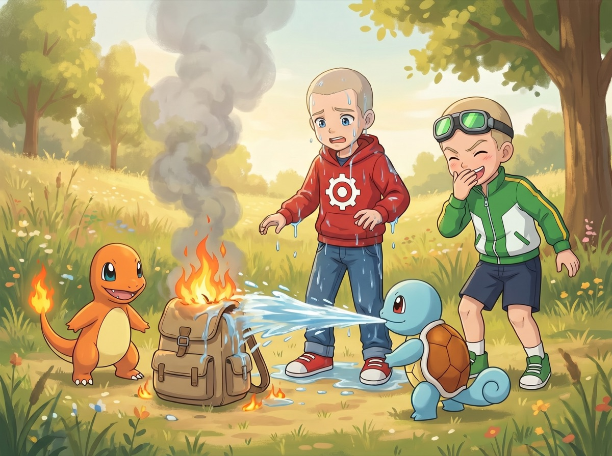
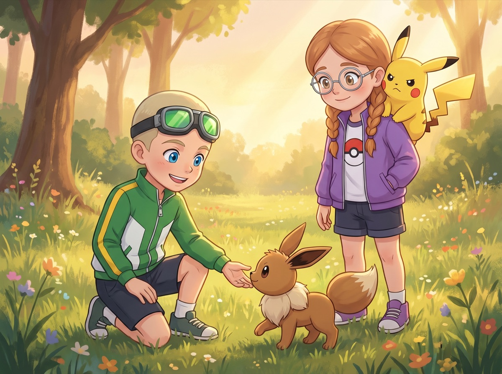

Сезон 1 — Три тренера и тайна Серебряного леса
Эпизод 2. «Двое новичков и стая Спироу»
Стая над головой

Стая Спироу (Spearow) кружила так низко, что Макстер чувствовал ветер от крыльев.
— Так, — быстро произнёс он своему новому покемону, крепко держа красно-белый покебол. — Чармандер (Charmander)! Выходи! Жги их всех!
Покебол распахнулся — и на траву выпрыгнул маленький оранжевый дракончик с ярким огоньком на хвосте. Чармандер огляделся, увидел над собой десяток злых птиц с острыми клювами — и попятился прямо Макстеру на ногу.
— Чар... — прошептал он, явно не в восторге от ситуации.
— Смелее! — скомандовал Макстер. — Ты же огненный! Покажи им!
Чармандер сделал шаг вперёд, открыл пасть, собрался с духом — и выдохнул крошечный огонёк размером примерно с зажжённую спичку. Один Спироу лениво уклонился. Остальные не обратили внимания вообще.
— Ой, — Макстер поморщился.
Ромус рядом с ним тихо вздохнул и выпустил своего покемона: синяя черепашка с большими глазами и закрученным хвостиком встала рядом с Чармандером. Сквиртл (Squirtle) посмотрел на птиц. Птицы посмотрели на Сквиртла.
— Сквиртл, — сказал Ромус спокойно, — ты умеешь атаковать водой?
— Сквир! — радостно ответил Сквиртл и выстрелил струёй воды прямо... вверх. Всё попало обратно на него, на Ромуса и на Чармандера.
— Чар! — возмущённо воскликнул Чармандер и посмотрел на Сквиртла с таким оскорблённым видом, будто тот намеренно потушил его хвост. Хвост, впрочем, только заморгал — не потух — но дым пошёл.
— Я не подумал... — пробормотал Ромус, утирая лицо. Вода капала с его красной худи.
Именно в этот момент стая снизилась ещё.
— Оба — за мою спину. Быстро! — раздался чёткий голос.
Мальчики повернулись.
На краю поляны стояла девочка со светло-каштановыми косичками в фиолетовой куртке с покеболом на груди. На её плече сидел маленький жёлтый покемон с красными щёчками — Пикачу (Pikachu). Его хвост светился золотом. Рядом с её ногой стоял коричневый пушистый покемон с белым воротником и прижатыми ушами — настороженный, но готовый.
Мальчики переглянулись — и без лишних слов метнулись к ней.
— Молодцы, — отозвалась девочка, не оборачиваясь. — Не машите руками. Не смотрите им в глаза.
— А ты кто? — не выдержал Макстер.
— Кристи. Потом.
Пикачу на её плече раздул щёки. Его красные пятнышки затрещали тихими разрядами — бззз-бзз — как будто внутри него завёлся маленький генератор.
Стая Спироу кружила. Самый большой из них — вожак, с лохматым красным гребнем — спикировал вниз.
— Пикачу, — выдохнула Кристи, — удар молнией. Вверх. Не по птицам — в воздух. Предупреждение.
— Пика!
Молния ударила в небо — яркая, белая, с треском. Несколько Спироу шарахнулись в стороны. Вожак затормозил в воздухе и завис, недовольно хлопая крыльями.
— Иви, — сказала Кристи, — выходи.
Коричневый пушистик сделал шаг вперёд.
— Быстрая атака. Вдоль стаи — не касаясь. Только чтобы они поняли: мы не беззащитные.
— Ии! — И Иви (Eevee) стремительно метнулся вперёд — мелькнул белым воротником, пробежал вдоль всей стаи и вернулся обратно быстрее, чем Макстер успел моргнуть.
Стая Спироу загомонила. Вожак что-то прокричал. Несколько птиц разлетелись в стороны.
— Ещё раз, Пикачу, — бросила Кристи тихо. — Заряд. Медленно.
— Пика-пика! — Пикачу засветился весь — золотой, яркий, как маленькое солнце.
Этого хватило. Вожак прокричал что-то короткое и недовольное. Стая развернулась, поднялась выше — и, ворча, полетела прочь над верхушками деревьев.
Через двадцать секунд над поляной была только голубая тишина.
Макстер выдохнул.
— Вот это да... — пробормотал он. — Ты сделала это без единой атаки?
— Почти без единой, — поправила Кристи и обернулась.
Голубые глаза за круглыми очками смотрели спокойно и оценивающе. Она оглядела мальчиков с ног до головы, посмотрела на Чармандера (который всё ещё неодобрительно косился на Сквиртла) и на Сквиртла (который с невинным видом отряхивался).
— Вы новички. — Не вопрос — просто факт.
— Новички, — не стал спорить Ромус.
— Судя по всему, от Профессора Дубинского?
— От него, — подтвердил Макстер. — Слушай, это было потрясающе! Ты одна разогнала целую стаю! Сколько у тебя покемонов? Как ты это сделала? Можешь научить?
Пикачу на плече Кристи посмотрел на Макстера с видом человека, которому задали слишком много вопросов сразу.
— Пика, — сказал он, чуть прищурившись. Примерно в том смысле, что «выбери один».
Знакомство и разбор полётов

Трава на поляне была мокрой от утренней росы — Сквиртл с Чармандером всё равно уселись рядом, сохраняя между собой ровно столько пространства, сколько позволяло взаимное недоверие. Иви устроился у ног Кристи и аккуратно вылизывал лапу.
— Меня зовут Макстер, — худощавый мальчик в зелёной куртке сдвинул гоглы на лоб и протянул руку. Голубые глаза горели от восторга. — А это Ромус, — он кивнул на мальчика в красной худи с маленькой шестерёнкой на груди. — Мы из Западного Поля. Сегодня первый день с покемонами. Ну ты видела, как здорово всё началось?
— Видела, — произнесла Кристи серьёзно. — Вы пошли по тропинке к холму?
— Ну да, — кивнул Ромус. Он говорил медленнее, спокойнее — голубые глаза смотрели внимательно. — Хотели посмотреть, куда ведёт дорога.
— На холме три гнезда Спироу. Профессор Дубинский обычно об этом предупреждает.
Ромус помолчал.
— Он начал. Но потом сказал «подождите, я расскажу про одну интересную вещь» и достал колбу с какой-то розовой жидкостью. А потом она упала, и мы решили, что...
— ...что лучше уйти, пока он убирает, — закончил Макстер и виновато поморщился. — Ой, я не подумал.
— Понятно, — сказала Кристи. Она помолчала секунду, потом спросила: — Вы знаете, почему стая Спироу такая агрессивная?
— Злые? — предположил Макстер.
— Напуганные. Они защищали гнёзда. Когда чувствуют угрозу — атакуют всей стаей. Это их инстинкт, а не злость.
Макстер открыл рот, потом закрыл.
— Ты знаешь много, — ответил Ромус, глядя на Кристи с настоящим интересом.
— Изучала. У меня Покедекс — девятнадцать записей.
— А у нас пока по одному, — отозвался Макстер, указав на Чармандера. — И один из них только что облил другого водой.
— Сквир! — обиженно возразил Сквиртл.
— Я просто констатирую!
Чармандер ткнул хвостом в землю рядом со Сквиртлом — не агрессивно, просто пометил территорию. Иви посмотрел на обоих с таким изысканно-вежливым выражением, как будто наблюдал не за двумя покемонами, а за двумя неловкими туристами в музее. Потом отвернулся.
— Ваши покемоны ещё не знают своих атак, — сказала Кристи. — Чармандер — огненный тип. Сквиртл — водный. Они противоположности, поэтому немного напряжены. Это нормально. Со временем привыкнут.
— Как долго? — спросил Макстер.
— Зависит от вас, — ответила она.
Пикачу на её плече зевнул и прикрыл рот лапкой — деликатно.
— А ты давно тренер? — спросил Ромус.
— Почти год. Пикачу у меня дольше всего. Иви — с вчерашнего дня.
— С вчерашнего дня — и уже так слушается? — удивился Макстер.
— Иви очень умный, — бросила Кристи, чуть смягчившись. — Мы поняли друг друга с первого дня.
— Ии! — подтвердил Иви и слегка встряхнул пушистым хвостом.
Макстер уставился на него.
— Он такой интеллигентный. У нас Сквиртл только что чуть Чармандеру хвост не потушил.
— Сквиртл! — возмущённо бросил Сквиртл.
— Ладно, ладно, случайно! — Макстер поднял руки.
Ромус тихонько улыбнулся.
— Подожди, — Ромус повернулся к Кристи. — Ты сказала, что использовала предупредительный удар, а не атаку по птицам. Но ведь можно было просто ударить — и они бы улетели быстрее. Почему ты выбрала предупреждение?
Кристи посмотрела на него внимательнее.
— Потому что они защищали птенцов. Атаковать их — значит навредить покемонам, которые ничего плохого не сделали. Они испугались нас первыми.
Ромус кивнул, медленно и вдумчиво. Как человек, который запоминает не только слова, но и причины.
— Я понял, — пробормотал он. — Тут есть закономерность. Поняли угрозу — отступили. Если бы мы тогда не махали руками...
— Скорее всего, они бы сами улетели, — подтвердила Кристи. — Спироу не нападают просто так.
Макстер потёр затылок.
— Ой, я не подумал, — сказал он в третий раз за это утро.
— Это поправимо, — ответила Кристи. Без иронии. Просто как факт.
Откуда-то со стороны холма донёсся далёкий крик:
— Мальчики! Кристи! Всё в порядке?!
Все трое повернулись. На краю тропинки стоял Профессор Дубинский — халат всё ещё нараспашку, в руке — та самая колба, теперь тщательно обмотанная тряпкой. Очки съехали ещё ниже.
— В порядке! — крикнула Кристи.
— Замечательно! Я как раз хотел предупредить про гнёзда! Там три штуки — я вспомнил, когда колба... впрочем, неважно. Вы ели сегодня?
— Ели!
— Тогда всё в порядке! Примерно! — И профессор, бормоча что-то про колбу, зашагал обратно.
Макстер проводил его взглядом.
— Он всегда такой?
— Всегда, — отозвалась Кристи. — Но он лучший специалист по покемонам в регионе. Думает быстрее, чем говорит.
Первая настоящая битва

Они сидели в траве и Кристи объясняла. Макстер слушал с открытым ртом, Ромус — закрытым, но с такими глазами, которые замечают всё.
— Чармандер хорошо подходит тренеру с быстрой реакцией, — говорила Кристи. — Огонь — это атака. Сквиртл лучше для тренера, который думает наперёд — водный тип устойчив и...
— Я хочу попробовать! — перебил Макстер, вскакивая. — Пикачу против Чармандера! Один раз! Нам надо понять, что такое настоящий бой!
Пикачу посмотрел на Чармандера. Чармандер гордо задрал нос — принял вызов, который ещё никто не объявлял.
— Чар! — ответил он уверенно.
Кристи вздохнула.
— Хорошо. Только до первого промаха. Цель — понять команды.
— Пикачу, быстрая атака, — скомандовала она.
Пикачу молнией метнулся по поляне. Чармандер подпрыгнул — и промахнулся. Тот уже был в другом месте.
— Чармандер, огонь! — крикнул Макстер.
Чармандер выдохнул — пламя стало больше, чем при первой попытке. Горячий шарик пролетел в метре от Пикачу.
— В бою учится быстрее! — кивнул Макстер довольно. — Огонь! Ещё раз!
— Пикачу, вправо, — сказала Кристи.
Пикачу уклонился. Огненный шарик пролетел мимо — и попал точно в Ромусов рюкзак, который лежал на траве.
Рюкзак дымился.
— О нет, — отозвался Ромус.
Сквиртл, который весь бой спокойно наблюдал с края поляны, немедленно развернулся и выстрелил водой прямо в рюкзак. Рюкзак спасли. Но Ромус теперь был мокрый с головы до ног второй раз за день.
Все остановились.
Макстер зажал рот рукой. Плечи его затряслись.
— Чармандер... — с трудом проговорил он, — ты сжёг вещи нашего друга.
— Чар! — Чармандер выглядел абсолютно невозмутимо.
— Сквиртл, — тихо выдохнул Ромус, капая водой, — ты мог бы не поливать меня заодно.
— Сквир! — возразил Сквиртл с таким видом, будто это было абсолютно разумное решение.
Иви отвернулся с видом «я в этом не участвую». Пикачу поднял обе лапки — мол, я всё сделал правильно.
Кристи посмотрела на мокрого Ромуса, на дымящийся рюкзак, на Чармандера с невинным видом, на Сквиртла с гордым — и засмеялась. Коротко, чуть удивлённо — как будто сама не ожидала.
Макстер тут же присоединился, громко и без стеснения. Ромус помолчал секунду, посмотрел на свои мокрые руки — и тоже улыбнулся своей тихой, спокойной улыбкой.
— Подожди, — сказал он. — Тут есть закономерность. Чармандер поджигает — Сквиртл тушит. Может, это на самом деле работает?
— Вы идеальная команда, — согласилась Кристи, вытирая слёзы смеха, — по крайней мере для пожарной службы.
— О! — Макстер вскинул палец. — Это идея! Открыть команду пожарных с покемонами!
— Рюкзак, — спокойно бросил Ромус.
Макстер покосился на рюкзак. Открыл рот — и передумал.
Пока они разбирали вещи, Кристи показала мальчикам, как подавать команды чётко и коротко и почему важно смотреть на покемона, а не только на противника. Ромус записывал — мокрой ручкой по мокрой бумаге. Макстер сразу пробовал — Чармандер повторял атаки, каждый раз точнее.
— Хорошо, — ответила Кристи после четвёртой попытки Чармандера. — Ты быстро учишь команды. Это редкость для первого дня.
Чармандер выпрямился и с достоинством выдохнул небольшой огонёк.
— Он гордится, — сказал Макстер довольно.
— Вижу.
Пикачу на плече Кристи скрестил лапки и чуть надул щёки — выражение, которое у него означало: «Он хорош, но я лучше».
— Не ревнуй, — шепнула ему Кристи.
— Пика! — оскорблённо ответил он.
Солнце поднялось выше. Трава подсыхала. Чармандер и Сквиртл теперь сидели рядом — уже без лишних полуметров между собой. Не друзья ещё, но уже не чужие.
— Слушай, — пробормотал вдруг Макстер, — а ты куда идёшь? Ну вообще. В смысле — у тебя есть план?
Кристи поправила очки.
— Путешествую. Записываю покемонов в Покедекс. Хочу встретить как можно больше.
— А без команды? Одна?
— Обычно — одна, — выдохнула она. Просто, без особого чувства.
Макстер переглянулся с Ромусом. Ромус слегка кивнул — едва заметно, но Кристи поняла, что этот кивок что-то значил.
— Хочешь — идём вместе, — сказал Макстер. — Нам всё равно надо куда-то идти. Мы хотим сражаться с другими тренерами, ходить на турниры — всё такое. Но с тобой явно безопаснее, чем без тебя. Как мы только что выяснили.
— Это... — начала Кристи.
— И потом, — добавил Ромус тихо, — ты знаешь про покемонов вещи, которые нам ещё только предстоит узнать. А мы, возможно, будем полезны тебе. Подожди. Тут есть закономерность.
Кристи посмотрела на него.
— Какая закономерность?
— Ты одна хорошо справляешься. Но мы трое справимся лучше, — спокойно ответил он. — Это логично.
Она улыбается

Кристи долго молчала.
Пикачу посмотрел на неё — снизу вверх, как он смотрел всегда, когда хотел, чтобы она что-то решила. Иви встал, подошёл к Ромусу и аккуратно обнюхал его руку. Потом к Макстеру — и ткнулся мордой ему в ладонь.
— Ии! — ответил Иви. Вполне определённо.
Макстер просиял.
— Видишь? Иви за нас! Иви умный, ты сама говорила!
— Иви просто любопытный, — пробормотала Кристи, но голос у неё чуть смягчился.
— Кристи, — сказал Ромус, — ты нас спасла. Мы этого не забудем. Мы не очень опытные тренеры, это правда. Но мы честные. И будем стараться.
Макстер закивал быстро-быстро:
— Да! И я обещаю — Чармандер больше не будет жечь чужие рюкзаки. Правда, Чармандер?
Чармандер поднял лапку. Ромус посмотрел на него с лёгким недоверием.
— Чар, — выдохнул Чармандер с видом человека, который ничего не обещал, но готов рассмотреть предложение.
Кристи посмотрела на мальчиков. На Чармандера. На Сквиртла. На Иви, который уже делал свои маленькие аккуратные круги между двумя новыми знакомыми. На Пикачу — тот смотрел на неё, чуть прищурив глаза: «Ну? Что скажешь?»
Она думала про девочек в парке, про год одиноких прогулок — и про то, что она знала всё про покемонов, только не знала, каково это, когда рядом кто-то, кому можно рассказать.
Кристи открыла рот, закрыла его. Потом ответила:
— Хорошо. Один день. Посмотрим, как вы справитесь.
— Один день! — воскликнул Макстер. — Это уже что-то!
— Это испытательный срок, — уточнила Кристи серьёзно.
— Понял. Ромус, мы на испытательном сроке.
— Слышу, — сказал Ромус.
— Не жечь рюкзаки, не будить птиц, слушаться Кристи в бою. Что ещё?
— Ещё, — отозвалась Кристи, — не перебивать, когда я объясняю про типы покемонов.
— Договорились.
— И не делать глупостей первыми.
— Это уже спорно, — честно пробормотал Макстер. — Но постараюсь.
Пикачу посмотрел на него скептически.
— Пика.
— Ничего не значит, — сказал Макстер покемону. — Ты меня не знаешь.
— Пика-пика, — произнёс Пикачу в том тоне, который явно означал «мы ещё посмотрим».
Ромус поднял с земли полусухой рюкзак — внимательно осмотрел запись в блокноте.
— Первый день. Чуть не съедены Спироу, рюкзак обгорел, Сквиртл облил меня два раза, — прочитал он вслух. — Хороший день.
— Это тебе не грустно? — удивилась Кристи.
— Нет. Мы же живы. И у нас теперь есть компания. — Он спокойно закрыл блокнот. — Это хороший результат.
Кристи посмотрела на них обоих ещё раз — на Макстера, который уже что-то громко объяснял Чармандеру про следующие тренировки, на Ромуса, который тихо улаживал отношения Сквиртла с рюкзаком, на двух маленьких покемонов, которые сидели рядом и смотрели на своих тренеров с выражением «что-то пошло не так, но в целом нормально».
И улыбнулась.
По-настоящему. Не вежливо, не привычно — а широко и немного удивлённо. Как будто сама не ожидала.
Пикачу заметил это раньше всех. Он тихо фыркнул, довольный, и устроился на её плече поудобнее — положил подбородок на макушку её головы.
— Пика, — ответил он очень тихо. Почти себе.
Кристи поправила очки.
— Ладно. Идём. Дорога на восток — через ручей. Там, за берёзовой рощей, есть тропинка к следующему городу.
— А там можно будет сражаться? — немедленно спросил Макстер.
— Там можно будет пообедать, — ответила Кристи. — Сначала еда.
— Правильно, — согласился Ромус. — Голодный тренер — плохой тренер.
— О! — Макстер ткнул пальцем в него. — Хорошая поговорка! Ромус, запиши!
— Уже, — сказал Ромус.
Трое новых друзей вышли на лесную тропинку — Кристи первой, Макстер рядом, Ромус чуть позади. Чармандер и Сквиртл шли следом — уже почти плечом к плечу. Иви бежал рядом, его пушистый хвост мелькал в высокой траве. Пикачу на плече хозяйки смотрел вперёд.
Впереди был целый мир. Кристи знала это давно. Но теперь рядом шли ещё двое — и это было... хорошо.
А на следующий день в Каменном Броде Макстер увидел первого настоящего соперника — тренера с серым камневым покемоном в руках. «Огонь не поможет», — тихо произнесла Кристи. «Что значит — не поможет?!» — воскликнул Макстер. — «Он же Чармандер!»
Урок этого эпизода
Друзья появляются тогда, когда ты помогаешь другим.